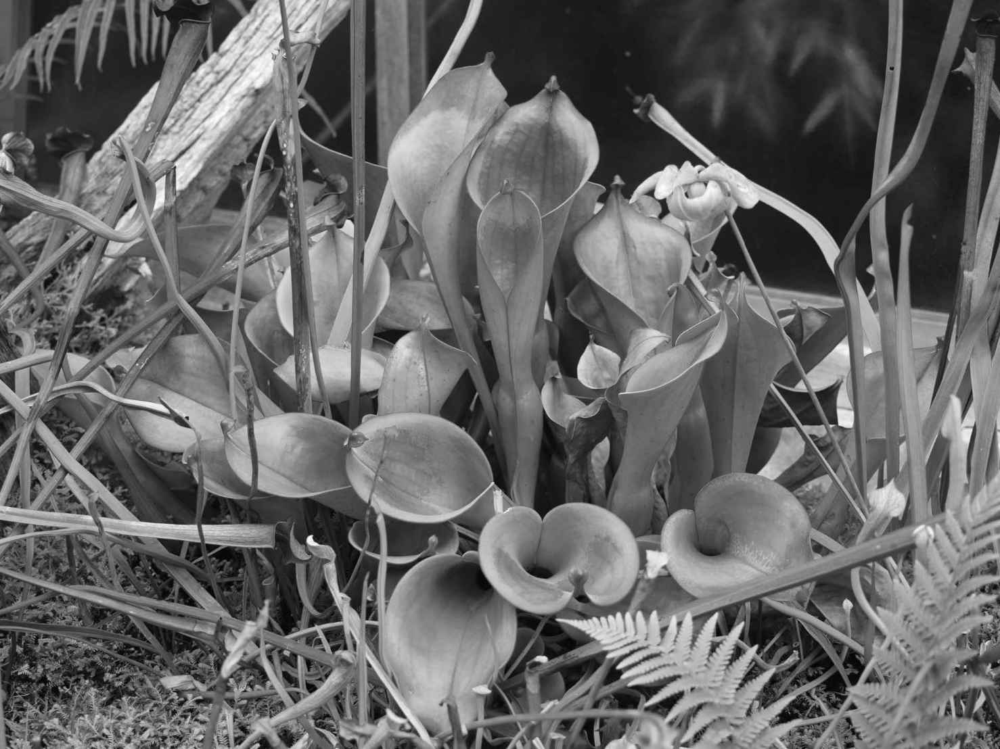
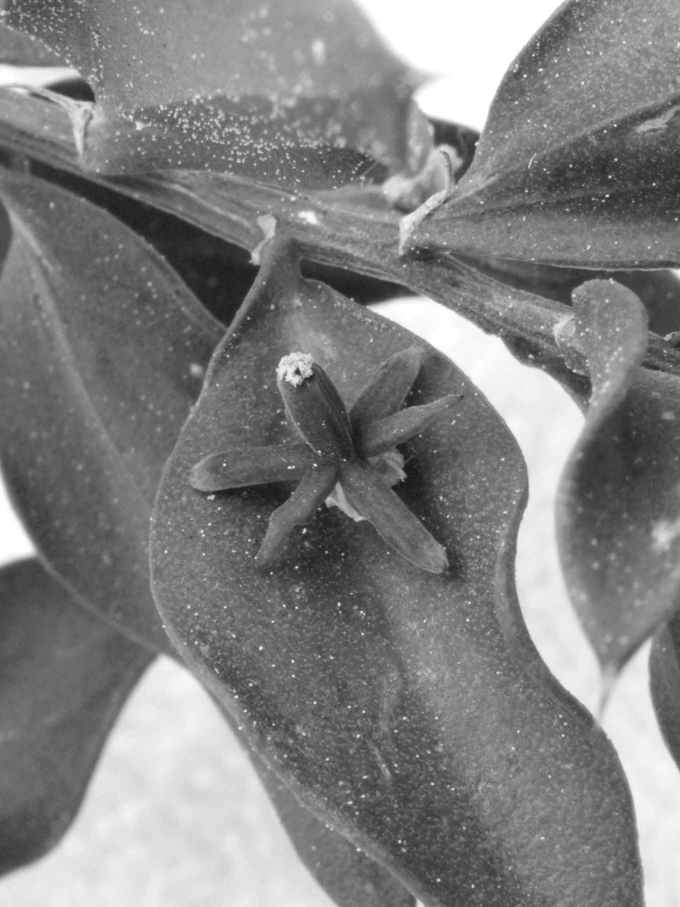

大约4.7亿年前，在绿藻生活了多年的海水中，有一种植物脱离海水并存活了不止一代。这就是地球自然史中的重大事件之一，人们通常将其称为征服陆地。然而，由于水中的许多植物已经进化出将自身附着在基岩上的方法，我们也可以轻易地（或许还更精确地）将这个事件描述为征服空气。所以，想要离开熟悉且舒适的海洋环境，植物到底面临着怎样的挑战呢？
第一，在空气中生存时，植物需要面对风造成的干燥环境。生活在海水中时，周围的水可以通过渗透作用进入到植物细胞中。可以说，生活在海水中，隔绝水要比吸收水更成问题。当第一种陆生植物被滞留在水环境之外时，它们不仅要减少水分的损失，还要找到一种吸收水分的方法来替代不可避免的损失。与吸收水分的问题一同到来的，就是保持水分的问题。如果考虑到部分早期陆生植物家族（如藓类植物）解决这一问题的方法，我们会发现它们仅仅是忍受干燥环境并在下雨时再补充水分，而非阻止干燥环境。毫无意外，在欧洲发现的藓类植物物种中有10%都发现于英国，而欧洲半数的苔类植物物种都发现于爱尔兰，因为这两个国家因阴雨天气而闻名。所以第一种陆生植物有可能过着双重人格的生活方式，在湿润时吸收水分和营养，在干燥时则停止活动。
第二，也是与第一个问题相关的，就是第一批陆生植物必须找到允许空气（包括二氧化碳和氧气）进入其光合结构的方式。对于生活在水中的植物来说，这两种物质均溶解在水中且充足可用。叶片上可用于气体进入的任何开口也都是水分离开植物体的出口，而如今水分对陆生植物来说非常珍贵。
第三，同样与前面相关的问题就是如何找到植物所需的其他原料，比如氮、磷、钾、钙、铁、硫、镁、硅、氯、硼、锌、铜、钠、钼和硒。必须认识到，这些植物所移植的土地曾经是裸露的岩石。尽管可能存在沙粒、其他微粒以及较大石块的沉积物，但据我们目前所知，当时很可能还没有土壤。这是因为现今土壤的一种重要组分就是有机物质，即死亡有机体的残骸。土壤中也有其他的生物体，比如细菌、真菌和动物。在土壤出现之前，植物没有发育出复杂的根部系统从土壤中获取养分的进化压力。然而，当时的植物需要一个锚来固定自己，以免植物体从岩石上被风吹走或被水冲刷掉。藻类植物具有固着器，但这种结构似乎没有应用到干燥的陆地上。
第四，植物需要找到可以生存的新地点。尽管植物想要牢固地附着，但它们仍想探索其他区域以找到可能更好的位置并摆脱灾难。这需要单倍体孢子的保护机制的出现。结果就是，这种保护机制可能已经以孢粉素的形式而存在。这是在陆生植物孢子（和花粉）外部以及小球藻（Chlorella ）等少数绿藻植物孢子壁中发现的一种非常复杂并且极其稳定的物质。对于研究孢粉素的人来说，稳定性所带来的问题就是这种物质很难显示出它的结构和化学组成成分，所以我们目前无法确定绿藻植物的孢粉素和陆生植物的孢粉素是完全相同的。因此，植物解决这个问题之前似乎已经有了预适应。预适应现象并不罕见，这可能是进化中的大型进展或多元创新的必要条件之一，否则进化就需要多种新型结构的同时出现。
在这种情况下，一些科学家面对的问题转而成了其他科学家的礼物，因为孢粉素的稳定性使得进化生物学家和生态学家可以根据土样乃至古岩中的花粉沉积来追踪植物的分布。植物出现在陆地上的一些最早证据就是，在距今4.75亿年的岩石中发现的孢子呈现出苔类植物的特征。这些孢子存在的年代要比最古老的完整植物（或者甚至是植物碎片）化石早上5 000万年。
第五个问题就是精子如何找到卵子的精妙问题。生活在水中的植物将一个配子（或者有时是两个配子）释放到周围的水中，配子会游动着寻找它的同伴。对于部分植物学家来说，这是陆生植物面临的巨大难题，但可能有些夸张了。这种论点认为，如果精子需要借助水来游动并寻找梦中的卵子，那么亲本植物就必须在潮湿的地方生存。现在仍有部分植物，例如藓类植物，需要水来促使配子的结合。简单观察下这些植物的生长环境，我们就会发现它们仅仅是被限制在季节性 湿润的地区生存。藓类植物通常生长在墙头，这种栖息地可能与第一种陆生植物曾经生长的裸露岩石类似。尽管墙头在夏季非常干燥，但冬季并非如此，所以藓类植物配子的结合就发生在冬季。此外，说藓类植物脆弱，因为它们需要借助水来完成精子的游动，这暗示了其他植物不需要水，而说任何植物都不需要水完全是无稽之谈。藓类植物对于水的临时需求并没有成为它们的致命缺点；这种植物已经在陆地上生存超过4亿年了。
如果将这五个问题综合起来，我们或许会发现，同时解决这些问题的一种简单方法就是成为一株苔类植物。园艺家们对这类微小植物中的地钱（Marchantia polymorpha ）非常熟悉，地钱时常生长在播撒过种子的花盆顶部。这类植物像是绿色的肝状叶或叶状体（尽管苔类植物中有部分物种在简单的叶脉两侧排列有叶片状结构）。与藓类植物类似，苔类植物也可以耐受干燥环境。叶状体的上表面存在桶形的气道，为叶状体的上半层提供光合作用必需的二氧化碳以及呼吸作用必需的氧气。叶状体的下层用于储存淀粉等物质。地钱具有单细胞的假根，可生长到岩石的小裂缝中起到固定作用。这些假根不需要吸收水分和营养，因为植物体可以直接吸收这些物质。如前所述，孢子表面覆盖着抗腐蚀的孢粉素，而植物将其性行为限制在每年的潮湿时期，以避免直接将孢子释放到环境中的严重问题。所有藓类植物和苔类植物的一个共同特征就是这些植物不会长高，与大多数蕨类植物、针叶树和开花植物相比如此，实际上与在其之前出现的许多红藻和绿藻相比亦是如此。这是因为陆生植物还须面对海草无须担忧的另一个问题——重力。海水为藻类提供的浮力使其得以生长成大型结构。空气不会提供这种支撑力，藓类植物和苔类植物因而保持着小型结构，但这也并没有阻止它们存活了几亿年。藓类植物进化出一种非常简单的内部管道结构，它由导水细胞组成，这些导水细胞有时也存在于化石植物中，就比如后文中即将介绍的库克逊蕨（Cooksonia ）。
问题来了，轮藻等植物或者当代轮藻植物的祖先究竟是如何进化成地钱或者是与地钱类似的植物呢？我们或许可以尝试寻找一种水陆两生植物的证据：它具有在水中自由漂浮的存在形式，但当其生活的池塘干涸时它也能在淤泥中存活。幸运的是，真的有这样一种苔类植物——叉钱苔（Riccia fluitans ）。这种植物可被看作半陆生植物，或者一种缺环：它们具有部分暴露在空气中、生活在陆地上的适应能力，但没有一次性完全进化出这些能力。然而这纯属猜测，并没有化石证据的支持。不幸的是，植物征服陆地和空气的化石证据普遍比较贫乏，因为这些柔软的小型植物并不能形成良好的化石，虽然我们提到过孢子能够形成良好的化石，但也是非常微小的化石。
所以最早的陆生植物曾与苔类植物类似，并且摆脱了对水这种无所不在、包罗万象的生长介质的依赖。这可以被看作地球生命进化过程中的重要里程碑之一，因为这些植物不仅向外扩张并进化成我们现在随处可见的40万种陆生植物，它们还转而为动物、细菌和真菌提供了许多新型栖息地。一如既往，进化并未安于现状，而是在苔类植物祖先的基础上进化出许多其他的植物类群：有些植物已经灭绝，有些植物仍然存在。
随着植物发生进化，不同的植物类群在不同的时间尺度上于生态学中占据了重要位置。数百万年的时间里，植物都不超过几厘米高。这其中有两层原因。首先，植物需要坚硬的内部骨架来使其克服重力、保持向上。其次，植物需要管道结构令水和其他营养物质可以运送至不断增长的高度。此外，可将水在管道中抽上来的水泵也会有所帮助。如果想要增长高度，细胞壁和水压力只能做到这样了——最高只有几厘米。已有明确的化石证据表明，在4.25亿年前，世界上至少存在7个物种的库克逊蕨属植物（现已灭绝），这种植物茎的长度从0.03 ～ 3毫米不等。
化石显示，这些植物由二歧式分叉的茎构成，茎的顶端具有一个孢子囊，意味着这处于生命史的孢子体阶段。（不幸的是，目前没有化石证据可被认为是配子体。）在叉枝的表面可以见到使得气体进入和水分损失的气孔。如果水分充足，且蒸腾作用也可在狭窄的毛细管状的管道中拉升水分的话，水分损失并非一无是处。在库克逊蕨化石中，科学家们发现了利用这种方式吸入水分的管道。这种组织被称为木质部管，尽管这种组织或许更像是现存藓类植物中特化的导水细胞，而非现存维管植物中的木质部。人们认为，气孔造成的水分损失足以拉动水分沿着茎移动到植物体顶端需水的部位。
然而，如果植物想要长得更大，它们就得想出一些新办法，或者像时常发生的那样，翻开工具箱看看基因遗传中有没有已经存在且符合目的的事物。植物发现了木质素，这种物质最早出现在一些红藻中，而后便被弃用了。红藻究竟需要木质素来做什么仍然无人可知。我们这是将木质素出现在树木中的进化过程拟人化了，但 这也对植物所采用的主要策略之一进行了说明，那就是植物为了存活下去就必须利用它们拥有的手段，因为植物并没有逃跑的选项。
为了理解木质素的重要性，我们需要先折回到植物的定义。植物的定义特征之一就是具有细胞壁。细胞壁有诸多功能，比如限制细胞的容量以防爆炸、防止部分小分子的进入等。细胞壁的基础形式并非十分坚硬。植物的初生细胞壁由两层组成：外层的胞间层以及初生壁本身。胞间层由果胶这种多糖的复杂混合物构成。胞间层的功能之一就是将多细胞植物中的细胞维系在一起。当植物的果实和叶片脱落时，也是胞间层断开了连接。此外，它在果酱制作中也十分重要。初生壁是由纤维素和半纤维素的混合物构成的。前者可能是地球上最为普遍的非化石有机碳分子，占据了所有植物体的三分之一。纤维素由很长的葡萄糖分子直链构成。与之相比，半纤维素则由具有支链的较短分子组成，并且其组成成分不仅仅是葡萄糖。初生壁的结构强大且灵活，当里面的细胞处于完全膨压时，整体结构就会非常坚硬。灵活性也十分重要，因为初生壁要随着细胞的生长而生长。细胞壁中的纤维素微纤丝的朝向决定了细胞的生长方向。然而，当我们看到植物枯萎时，如果细胞膨压由于失水而下降，那么植物将变得非常柔软无力，细胞壁也会发生弯曲和折叠。
每次水分供应不足时就枯萎的植物永远也无法长高，除非植物生长的地方从不停止下雨。这时木质素又可以发挥作用，以组成植物的次生细胞壁。木质素十分奇怪，它的丰度仅次于纤维素；可能占到木材干重的30%，以及非化石有机碳的30%（直到所有的森林被砍光）。从化学角度来说，木质素的奇怪之处在于它缺少一致的结构。然而这并不重要，因为它能完成重要任务。木质素需要完成的任务在每个组织中都有所不同，因而它的结构也有所不同。在植物的许多部位，木质素扮演着胶合剂的作用，填充了纤维素、半纤维素和果胶分子之间的空隙。木质素使得细胞壁非常坚硬。然而，木质素还可以在种子中作为储存设施，或是在含有许多木栓质时发挥防水功能。这有一个额外的好处，那就是与细胞壁的其他成分相比，木质素是疏水的，由木质素排列成的管道要比纤维素排列成的易渗漏的管道更为有效。
木质部管道的组成细胞都失去了生命组分，因而是空细胞。木质部细胞可分为两种基本设计。最早出现的（因而也被认为是更原始的类型）是管胞，继而出现的便是导管分子。与导管相比，管胞更长、更薄。管胞具有木质化的细胞壁，细胞壁中有螺旋状的增厚层。管胞通常与薄壁组织有关，后者有时也被称为基本组织。在管胞连接的地方，它们具有两个平面互相倚靠形成的长长的楔形末端。这有助于防止水流在茎内上升时连续性发生中断。管胞倾向于聚成束状来发挥功能，水从一个管胞渗向另一个，有助于防止水流中含有气泡。
与管胞相比，导管分子更短、更宽，也更难搭建。它们非常紧密地排列起来，与茎内上下细胞相连的端壁发生穿孔，使得水分通道更通畅。端壁有多种穿孔形式，但它也需要为水分运输速度的增加而付出代价，那就是水流也更容易发生中断。导管最早发现于开花植物，也在很长一段时间内被认为是开花植物在当前大获成功的原因之一。然而，人们目前在多种植物中都发现了导管，例如蕨类、木贼类、石松类植物等，所以导管也和管胞一样发生了几次进化。考虑到世界上最高、最大的树木都具有管胞，很难认为管胞与导管毫无关联。人们认为360英尺高的北美红杉已经处于当前植物工程性能的极限。值得注意的是，我们所称树木的生长习性已经进化了许多次。我们很难对树木进行精准的定义。在法律上，树是指直径至少3英寸、距地面至少5英尺高的单茎木本植物。从植物学角度来说，树仅仅是指中间竖有一根枝条的植物——但枝条的组成可以多种多样。
不可避免的是，在这些坚硬、厚重的木质化茎的进化过程中，出现了许多其他问题，不仅包括如何直立生长、如何快速摄取水分和营养以供给植物顶端，同样重要的还有如何从植物顶端将光合作用产物运输到需要能量的根部。植物需要更好的根部，我们将在后文中对此进行讨论，但光合产物的运输也需要更多的管道。
在陆生植物曾经都是藓类植物和苔类植物时，植物中并没有大量的细胞分化。大多数细胞都能进行光合作用，所以能够自给自足。而那些不能进行光合作用的细胞距离光合细胞太近，所以只要有简单的胞间运输通道便足够了。植物一旦发生木质化，地上部分与地下部分的距离就太远了，以至于扩散作用无法生效。如果木质部是上行的运输系统，那么植物也需要下行的运输系统，这就是韧皮部。
韧皮部和木质部之间有一个简单的区别，那就是韧皮部细胞都是活细胞。作为一种植物组织，韧皮部由三种细胞类型组成。首先便是筛管，植物的汁液可通过这种细胞流动。筛管分子没有细胞核，但它们确实具有细胞质以及内部的少数细胞器，使其能够发挥功能。筛管像管段一样排列起来。筛管分子的端壁就像筛子，孔中可通过大于一般胞间连丝的物质。胞间连丝是将细胞彼此连接起来的小管道，而它在筛管中则连接着少量通向伴胞的细胞质，这就是韧皮部中的第二种细胞类型。伴胞具有高于平均水平的线粒体数量，因为它需要为筛管分子提供能量。伴胞中高度分化的一类被认为是一种传递细胞，它具有相当盘绕的细胞壁，使其能够从周围的细胞壁空隙中有效地聚集细胞溶质。韧皮部中的最后一种细胞类型就是以薄壁细胞、石细胞和纤维形式存在的基本组织。石细胞是一类坚硬的细胞，尤其常见于地中海环境中在夏季经历严重水压力的植物中。厚壁组织中的细胞几乎全是增厚的次生细胞壁，中央有少量的细胞质。
许多植物的生命都很短暂，它们一旦产下后代便会死去。其他植物则能够年复一年地繁衍后代。其中一些这样的多年生植物变成了木本植物，能够生存许多年。这需要植物的茎不仅能抵抗害虫和疾病，周长也要能够增长。这种支架结构无须存活，许多树木的茎干也确实不是活组织。当树木被砍倒后，我们通常可以通过计算树干中同心环的数量来衡量植物的年龄。这些环状组织是由茎尖后方最早发育成的环状维管形成层产生的。形成层是一类分生组织，可发育成其他类型的成熟组织。维管形成层的管道在内部形成木质部，在外部形成韧皮部。它还能向侧方分裂，跟随茎干周长的增长而增长。
在有些树木中，这种衡量方法并不奏效，因为这些树木中的维管组织并不是茎周围的连续环，而是随机分散在茎中的木质部和韧皮部的束状排列。棕榈就是其中一个例子。棕榈的芽没有如上段描述的次生侧生分生组织。生长锥具有顶端分生组织，它的后方存在生长为叶片的分生组织——叶原基。然而，还有一种结构叫作初生加厚分生组织。在新萌发的棕榈种子长出芽时，这种组织很小，但随着茎变粗，初生加厚分生组织也会变粗。它的功能就是产生维管束，就像压面机生产意大利面一样。如果年幼的棕榈树生活在最适条件中，生长锥就会越长越粗，直到达到该物种的最大直径为止。植物体继而会开始生长，并产生合适的树干。然而，如果植物在未来遭受一段略差于最适条件的时段，分生组织的宽度就会下降，导致茎缩小。然而，如果生长条件能够再次改善，那么分生组织也能扩张到先前的水平，树木因此也能长到腰部那么粗。
当种子萌发时，最早出现的结构通常是嫩芽，因为吸收水分是幼苗的第一需求。如果我们把种子看作包裹在坚硬外壳中、口袋里还装有盒饭的胚胎，那么先长出根就是个不错的策略。然而，盒饭只能在一段有限的时间内为胚胎供给，而且这个胚胎也不能回家找妈妈。它必须生产自己的食物，为了做到这一点，它就需要进行光合作用，因此也就需要叶片（或者类似叶片的组织）。
茎尖的组织排列与根尖完全不同。例如，茎尖没有“茎冠”，因为挤过空气应该不会造成损伤。这并不是说，许多植物中的生长点没有受到保护。保护生长点的简单方法就是让嫩叶及其叶柄排列在分生组织周围。茎的分生组织会发育成侧生附器（比如叶以及更多生长为侧枝的茎）和终端器官（比如花）。这与根不同，因为根通常不会产生任何分化结构，而只会产生更多的根。根中细胞发育的控制来源于根中细胞的位置，而在茎中，有更高级、更复杂的基因活动控制着组织的运转。
我们已经介绍了茎及其组成细胞的结构，但茎主要是支持系统。尽管绿色的茎也会为植物的光合作用活动做出贡献，但这远远不够。只有在仙人掌以及其他部分肉质植物中，全株植物才需要光合作用的茎，因为在水分短缺时，叶片作为一种可行策略实在是太浪费了。然而，大多数植物都会分化出叶片。每个物种的叶序通常是不变的，并且是由生长锥的相互作用所决定的。茎的分生组织处于一种断裂与补充的恒定状态。当一片分生组织从侧面分离时，它就会变成一处叶原基，继而生长出基部带芽的叶片。下一个叶片会在另一片分生组织分离后形成。而这个叶片的生长位置取决于前一处叶原基的抑制作用有多强。根据所考虑的植物物种叶序的不同，最小抑制作用的生长点会分布在茎周围的不同角度。在互生叶序的植物中，这个角度是120°；在对生叶序的植物中，这个角度是180°；在轮生叶序的植物中，这个角度大约是137°。
我们通常都会认为自己了解叶片是什么。叶是一种扁平的绿色结构。我们可能记得课堂上学过叶片的上表面细胞具有厚角质层；下表面细胞具有气孔以完成蒸腾作用，同时角质层较薄；中间则有像砖块一样排列的上层细胞（栅栏叶肉），以及更加开放的下层细胞（海绵叶肉）。在这些结构中穿过的是由木质部、韧皮部以及可能有部分木质化的硬化组织构成的叶脉。这是一种很好的广义上的叶片结构，但在这里，正如植物生物学的诸多方面一样，叶片并没有真正的默认设置，因为植物已经适应了太多不同的生态位。
事实上，叶是茎上的侧生结构，在叶从茎上长出的叶腋处，芽可能生长为营养枝或者是花序。叶是一个具有预先决定好的有限尺寸的确定结构。有些“叶”实际上是刺状突起（例如豆科植物的部分成员），有些叶会发育成瓶状以捕获愚蠢的昆虫（例如太阳瓶子草），还有些叶呈卷须状用于辅助攀爬。严格来说，事情恰恰相反，刺状、瓶状、卷须状的可能是叶片。这是对同源原理的一个简单诠释：功能并不能定义结构，而结构的特性是由其相关位置和发育起源所决定的。

图5 太阳瓶子草（Heliamphora ）的叶已经过改良，适用于捕捉昆虫
同样地，有些叶片看起来不像是叶片，也有些其他结构看起来像是叶片却不是叶片。英国植物假叶树（Ruscus aculeatus ）的花以及果实生长在叶片的上表面。同样，马德拉群岛的攀缘植物仙蔓（Semele ）的花生长在叶片的边缘上。看到这类事物时你必须要非常小心，因为绿色的扁平物并不都是叶片，而叶子上也不能长出花朵。这些开花的叶只不过是在外形上类似叶片的扁平的茎。

图6 假叶树，又名“屠夫的扫帚”，看起来像是花朵长在叶片上。这些“叶片”实际上是扁平化的茎
藓类植物和蕨类植物的茎通常一分为二地开叉。这是相对容易做到的，因为它只需要顶端分生组织区域分裂成两半。在大多数种子植物中，茎分生组织在植物生长过程中保持基本相同的大小，而侧生分生组织脱落并形成带有芽的叶，而这些芽又包含着侧生分生组织。在一些植物中，叶原基和侧生分生组织一起离开茎分生组织，但结构并不相同。在其他植物中，只有叶原基与茎分生组织分离。随后在叶片开始生长和分化时，其中一些细胞才恢复成分生组织。
我们已经注意到，小型的苔类植物和藓类植物具有细小的单细胞假根，这种微型的根状结构由单个细胞构成，可使植物吸附到岩石上。在植物界，包括轮藻植物在内，假根随处可见，所以这可能也是一例陆地生活的预先适应。近期有证据表明，藓类植物小立碗藓（Physcomitrella patens ）的假根发育调控与开花植物的根毛发育调控受到同样的基因控制。
微小的假根本身绝不可能具备为欧洲蕨等大型多年生蕨类植物单独提供水分和营养的能力，更不用提仙人掌、红杉或是橡树了。根部生物学是相当受忽视的研究对象；在这种情况下，眼不见确实是“心不烦”。就像植物的地上部分在不同的物种中有所不同，植物的地下部分也是如此。大多数植物物种根部（80% ～ 95%）的一处相同点就是与细菌或真菌的密切关系。这些丛枝菌根为植物提供营养而令其受益，特别是提供了磷酸盐。反之，真菌也从根部的部分细胞中摄取糖分。
这种类型的关系已经出现在化石记录中，似乎是从我们认为不具有真正根的植物的地下部分进化而来。现在我们认为根至少经历了两次进化，且不包括假根。最早的根发现于3.5亿年前的化石中。这些根所属的植物隶属于石松类植物。这种类群在进化树上的分支位于藓类植物和蕨类植物之间。石松类植物是最早生长成严格意义上的树木的植物，所以它们一定具有能够供给树冠的根部系统。这些古代石松化石的根部与更为现代的石松根部不同，前者具有由木质部和韧皮部组成、周围是薄壁组织的单一中央核心，以及具有根毛的表皮。
到蕨类植物开始产生根时，植物中已进化出一条不同的发育途径。在大多数蕨类植物和种子植物中，根尖是由四个不同的区域组成的。位于顶端的根冠可以保护更加精细的结构在根系穿过土壤时免受损伤。根冠后方就是分生组织，细胞分化就在此处发生。位于分生组织中心的是静止中心，人们认为此处可以调控周围的分裂细胞的分化（与分裂相对）时间。随着顶端逐渐脱离，分生组织产生的新细胞随后会变成伸长区。这些细胞在伸长区完成扩大后会在分化区找到自己的位置，并发育成表皮、皮层、内皮层或维管组织。在更后方，多年生植物会产生侧生分生组织的管道。这种形成层将形成次生木质部（管道内部）和次生韧皮部（管道外部），因此形成更大的永久根。这些根继而会开叉并形成复杂的根部系统，就像我们看到狂风连根拔起的成熟树木那样。尽管这种类型的根部系统很常见，但还有另一种根部类型叫作不定根。这种根生长自植物的某个部位，而非自种子胚胎长出的初生根。这种情况发生在单子叶植物中，也解释了成熟的棕榈树即便只有少量的根也能进行移植的原因。更多细节我们将在第五章中进行介绍。
现在我们已经了解了各种各样的陆生植物，其高度从贴地的苔类植物到高耸的北美红杉不等，体型从微小的浮萍到巨大的桉树不等。然而，无论植物多大或多小，它们的生命都有着同一个目标：在死去之前繁衍出更多的植物。在先前讲述的世代交替的许多变化中，它们就是这么做的。让我们翻开第三章吧。